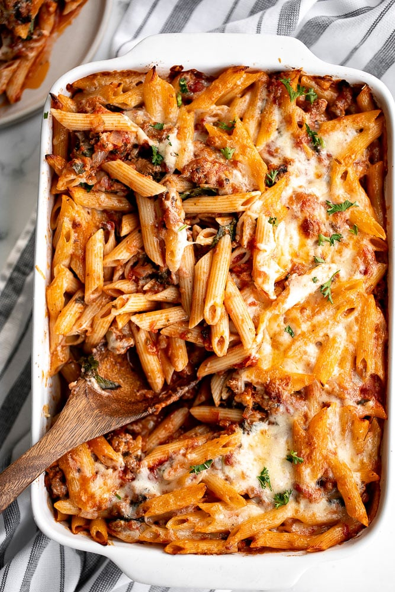

Baked Ziti

Baked ziti is a classic Italian-American pasta dish that is hearty, comforting, and perfect for feeding a crowd. The dish typically consists of ziti pasta that is mixed with a tomato-based meat sauce, ricotta cheese, and topped with melted mozzarella cheese and grated Parmesan cheese.
Ingredients
- 1 pound (16 oz) ziti pasta
- 2 tablespoons olive oil
- 1 large onion, chopped
- 3 cloves garlic, minced
- 1 pound (16 oz) ground beef or Italian sausage
- 1 can (28 oz) crushed tomatoes
- 1 teaspoon dried basil
- 1 teaspoon dried oregano
- 1/2 teaspoon salt
- 1/4 teaspoon black pepper
- 2 cups shredded mozzarella cheese
- 1 cup ricotta cheese
- 1/4 cup chopped fresh parsley
- 1/4 cup grated Parmesan cheese
Steps
- Preheat your oven to 375°F (190°C).
- Cook the ziti pasta according to the package directions until al dente. Drain the pasta and set aside.
- Heat the olive oil in a large skillet over medium heat. Add the onion and garlic and sauté for 2-3 minutes or until softened.
- Add the ground beef or Italian sausage to the skillet and cook until browned, stirring occasionally to break up any clumps.
- Add the crushed tomatoes, dried basil, dried oregano, salt, and black pepper to the skillet. Stir well to combine and let the mixture simmer for 5-10 minutes.
- In a large mixing bowl, combine the cooked ziti pasta, the tomato and meat sauce, and 1 cup of shredded mozzarella cheese. Mix well to combine.
- Spread half of the pasta mixture evenly in the bottom of a 9x13 inch baking dish.
- Spoon dollops of ricotta cheese on top of the pasta mixture, then sprinkle with chopped parsley.
- Spread the remaining pasta mixture on top of the ricotta cheese layer.
- Sprinkle the top of the pasta with the remaining 1 cup of shredded mozzarella cheese and grated Parmesan cheese.
- Bake the ziti in the preheated oven for 25-30 minutes or until the cheese is melted and bubbly, and the top is golden brown.
- Remove from the oven and let the baked ziti cool for a few minutes before serving.
Return to main page